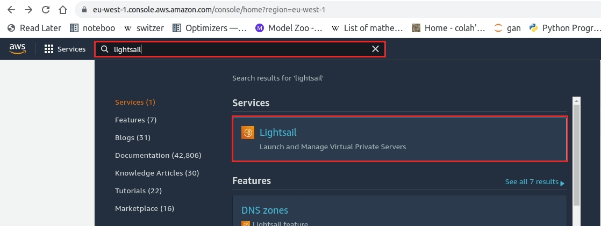
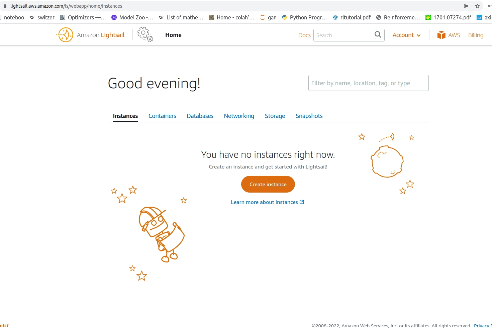
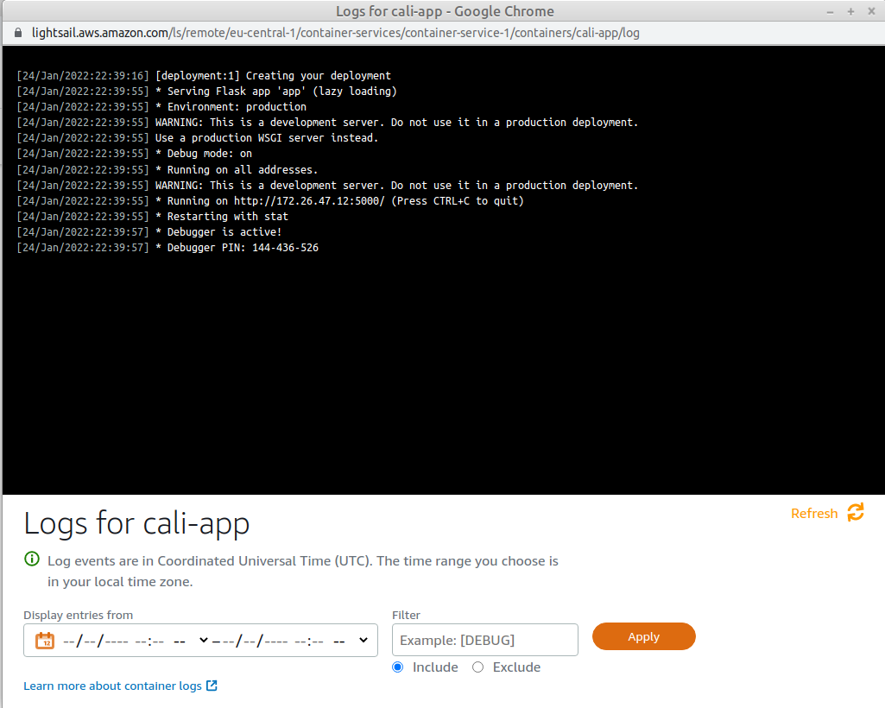

Deploy your app to AWS
Sign in to your aws account at aws login
Open the Lightsail service
The service will show a dashboard as follows:
Deploy your image
Select Containers > Create container service
Choose the Nano capacity
Select Set up deployment > Specify a custom deployment:
Container-name:
cali-appImage:<reponame>/cali-app:latestConfiguration: (leave as is) Port:5000, protocol http Public Endpoint: Select thecali-appcontainer (port 5000, health check path /)Create container service
It will take a few minutes until the app has been deployed
Check the apps log
